Saturday, November 14, 2026 · Documentation-led technical edition
Fortinet Enterprise Networking & Security Daily Study
12 product-specific engineering lessons, mechanism diagrams, operational evidence, and a 50-question graded examination.
Run Status: PARTIAL
What was completed: pre-generation historical inventory; 12 semantically screened lesson candidates; 12 substantive lessons; 50 graded MCQs with 200 per-choice explanations; 12 standalone SVGs and 12 editable draw.io diagrams. All 24 diagram assets were independently fetched from GitHub and passed structural checks.
Incomplete / limited stages: some Fortinet Document Library pages returned HTTP 403 to direct opening; official indexed guide content and Fortinet-hosted PDFs were used where available. Fresh Community searches covered all 12 product areas; two recent directly matched scenarios were verified (FortiAnalyzer and FortiAuthenticator), while ten areas had no directly matched recent scenario verified. GitHub report and index read-back: PASS. GitHub Pages workflow run 43617528563 completed build, deploy and report-build-status successfully; direct public report/index URL fetches remained inaccessible to the verification fetcher, so public reachability is not independently confirmed. Email was not attempted because notifications/email are disabled.
Remediation: retry direct access to blocked documentation pages; continue Community searches for the ten unmatched product areas; verify GitHub Pages after deployment. The scheduler was not modified.
Today's coverage
- FortiGate — FortiOS 8.0 FortiGuard server preference, RTT-based selection and multi-server load balancing
- FortiManager — FortiManager 8.0 local-user per-device mapping for branch-specific credentials and FortiToken bindings
- FortiAnalyzer — PostgreSQL-to-ClickHouse analytics migration, migration-state validation and archive-backed rebuild boundary
- FortiSwitch — FortiSwitchOS 8.0 DNS-over-TLS and explicit resolver CA validation
- FortiAP/Wireless — Hotspot 2.0 WBA OpenRoaming ANQP advertisement and RADIUS WBA attributes
- FortiNAC — FortiNAC 9.4 REST SMS Gateway request construction, HTTPS provider integration and visibility semantics
- FortiNAC-F — Persistent Agent certificate check: client proof, CA trust, CRL reachability and clock tolerance
- FortiAuthenticator — FSSO Mobility Agent NTLM signing compatibility and endpoint-to-FortiAuthenticator identity transaction
- FortiPAM — Associated-secret credential indirection and Smart Association username resolution
- FortiSIEM — Bipartite user-workstation login anomaly detection and dynamic peer communities
- FortiSASE — EAP-TTLS LDAP authentication for IKEv2 IPsec agent tunnels
- Secure SD-WAN — FortiOS 8.0 SD-WAN ISDB destination identity matching
How to use this report
Read each lesson's mechanism before using its commands. Treat configuration output as evidence of intent, not proof of a successful transaction. For troubleshooting, follow the documented evidence chain and distinguish control-plane reachability, protocol negotiation, authentication, policy match and final service outcome.
Each diagram is a teaching aid rather than a vendor GUI screenshot. The SVG opens independently; the adjacent draw.io file is editable.
Lesson 01 · FortiGate
FortiOS 8.0 FortiGuard server preference, RTT-based selection and multi-server load balancing
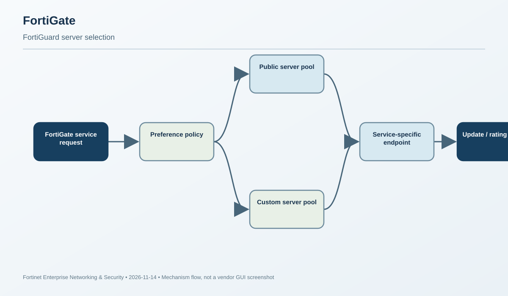
Why the change matters
FortiGuard is not one monolithic connection. FortiGate consumes different services: antivirus and IPS package updates, web/DNS rating, IoT detection, and virtual-patching queries. A design that can reach an update server but cannot reach a rating server is only partially healthy. FortiOS 8.0 makes server preference visible in the GUI and exposes more of the service-specific selection behavior, so the engineer can reason about candidate ordering rather than treating “FortiGuard reachable” as a single boolean.
Selection mechanics
The server list is built from public FortiGuard servers and any configured custom servers. The preference determines whether the public pool or custom pool is primary and whether the other pool is a fallback. The four operational choices are effectively: public only; public first then custom; custom first then public; or custom only. A custom server is not a generic replacement for every FortiGuard function: each entry has one or more service types, such as AntiVirus & IPS Updates, Filtering, IoT detection, or Virtual Patching Query. If the branch cache server is configured only for updates, it cannot satisfy a rating request simply because it is listed.
FortiOS 8.0 also changes the default value of load-balance-servers from one to five when the field was not explicitly set before upgrade. The field accepts 1–255 and controls how many servers are alternated as the first FortiGuard option. Explicit pre-upgrade values remain unchanged. Fortinet's 8.0 feature description also documents RTT-based sorting and round-robin distribution among the first-choice server candidates. This is control-plane service selection; it is not SD-WAN or firewall-session load balancing.
Configuration pattern
config system fortiguard
set load-balance-servers 5
end
config system central-management
config server-list
edit 1
set server-type update
set addr-type ipv4
set server-address 172.16.200.60
next
edit 2
set server-type rating
set addr-type ipv4
set server-address 172.16.200.70
next
end
set include-default-servers enable
set use-default-servers-as-main disable
endIn this example, custom servers are prioritized while public servers remain available as fallback. The two custom entries serve different functions. The actual deployment should use the server types supported by the organization's FortiGuard distribution design, not copy the sample addresses.
Verification and interpretation
Open System > FortiGuard > FortiGuard settings and inspect View Details under the relevant server section. Confirm that the expected public/custom servers appear in the intended order and that each has the correct service type. Use show full system central-management to verify the effective server list and default-server flags; inspect config system fortiguard to verify the load-balance count. A populated list proves configuration, not successful application-layer exchange. Test update and rating functions independently and correlate with routing, DNS, and firewall logs.
Operational failure analysis
If IPS updates succeed but web filtering returns rating failures, first compare the server-type assignments: update success does not prove a filtering server is present. If an upgrade appears to change FortiGuard behavior, check whether load-balance-servers was unset before the upgrade; the new default can expand the first-choice pool from one to five. When a custom server is preferred but unavailable, confirm the fallback mode and public-server inclusion flags. The “Always use custom” choice can be hidden when central management is configured for FortiGate Cloud, so verify show full system central-management before assuming the GUI is inconsistent.
Engineer takeaway: prove the correct service-specific candidate list, the preference order, and the actual exchange. Do not use one successful FortiGuard function as evidence that all FortiGuard services are healthy.
Primary documentation and supporting references
Lesson 02 · FortiManager
FortiManager 8.0 local-user per-device mapping for branch-specific credentials and FortiToken bindings
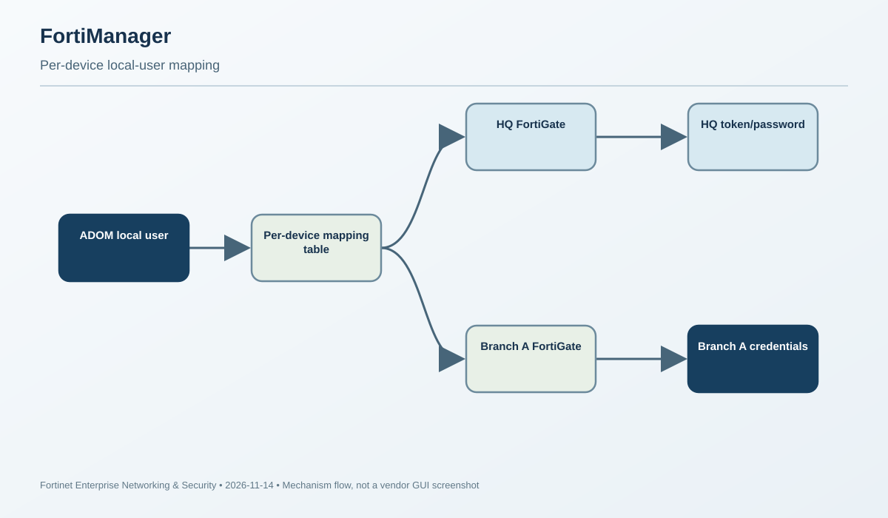
Purpose and object model
Large branch environments often reuse a logical username while enforcing different credentials at different sites. A central object named branch-operator may be required on many FortiGates, but headquarters might use a FortiToken binding while a remote branch uses a different password or token assignment. Before per-device mapping, the administrator's practical choice was often to duplicate the user definition or accept identical authentication material everywhere. FortiManager 8.0 introduces device-scoped overrides on a single local-user object.
The object still lives in an ADOM under Policy & Objects > User & Authentication > User Definition. The base local user supplies the shared identity and common attributes. The Per-Device Mapping section associates a managed FortiGate with the authentication values that should be rendered for that device. The mapping is not a new directory service and does not cause the FortiGate to consult FortiManager at login time. FortiManager resolves the device-specific values during configuration generation and installation; the FortiGate then authenticates locally using the configuration it received.
Configuration workflow
Create the local user once in the chosen ADOM. Edit that user and add a mapping for each target FortiGate. For each device, specify the required password and/or two-factor configuration, including the appropriate FortiToken assignment. Repeat for other devices that need a different authentication profile. Reference the user in the relevant firewall, SSL-VPN, IPsec or other supported authentication configuration, then install the policy/configuration to the target devices.
The important unit of review is the device mapping, not merely the parent object. A parent user can look correct while one branch has a stale token serial or an incorrect password override. In a multi-branch deployment, use a consistent naming convention for device mappings and treat a missing mapping as a deployment defect, not as an implicit inheritance decision unless the target release explicitly documents that behavior.
Verification
Before installation, inspect the user object and confirm that every intended FortiGate has exactly the mapping expected for that site. Compare the install preview for each device rather than relying on one representative device. After installation, inspect the target FortiGate's local-user configuration and authentication state. A successful install proves that FortiManager sent configuration; it does not prove the user can complete an end-to-end login or that the correct FortiToken device is in the user's possession. Perform a controlled authentication test against each materially different mapping.
Troubleshooting scenario
A branch reports that the shared username works at headquarters but fails at the branch after a policy install. First determine whether the branch mapping exists and whether the install preview contains its device-specific password/token values. If the target has the expected user but the wrong token binding, compare the FortiManager mapping to the target configuration. If the target configuration is correct, move to token activation, clock drift, user lockout and the specific VPN/authentication policy. Do not “fix” the branch by changing the parent password until you know whether that will overwrite other device mappings.
Dependencies and operational cautions
Per-device mapping depends on the correct ADOM, device membership and install target. It is configuration management, not live credential federation: changes are not effective on a FortiGate until the relevant configuration is installed. Maintain change control around password and token changes, and test both the shared identity and the branch-specific authentication path. Keep a break-glass administrator independent of the mapped account so that a bad mapping does not lock out the only management path.
Engineer takeaway: one logical user can represent multiple device-specific authentication states, but the installed FortiGate configuration remains the final authority for login behavior.
Primary documentation and supporting references
- Local user per-device mapping — FortiManager 8.0.0 New Features Guide Primary documentation
Lesson 03 · FortiAnalyzer
PostgreSQL-to-ClickHouse analytics migration, migration-state validation and archive-backed rebuild boundary
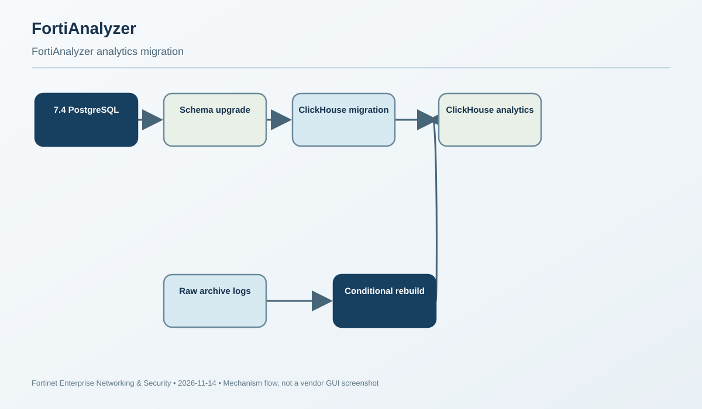
What changed
Starting in FortiAnalyzer 7.6, analytics logs are stored in ClickHouse rather than PostgreSQL. During an upgrade from 7.4, the existing analytics data is migrated. This is not the same operation as rebuilding the analytics database from raw archive logs. The upgrade path also has a sequencing dependency: FortiGate log-schema updates must complete against PostgreSQL before the PostgreSQL-to-ClickHouse migration begins. A long pause at that boundary can look like a hung upgrade even though the migration has not yet started.
ClickHouse is columnar and compresses analytics data more efficiently. The old database footprint also included hcache data used by FortiView and reports; those caches are regenerated on demand. Consequently, a drop from terabytes to a much smaller footprint is not proof of data loss. The authoritative completeness test is whether the expected time range and per-day log volume are present, not whether the new database occupies the same disk space.
Migration versus rebuild
Migration reads the existing analytics database and moves it to the new storage engine as part of the upgrade. Rebuild removes/recreates the analytics database from archived raw logs. Rebuild is a recovery action, not the first diagnostic step. FortiAnalyzer 7.6 rebuild applies across ADOMs rather than allowing a single-ADOM rebuild. It reboots the appliance, purges the analytics database, and re-inserts the archive logs. It can take hours or days at scale; Log View, FortiView and reports remain incomplete until it finishes. Logs received during the rebuild are not lost, but analytics views are not complete while the operation is running.
Verification sequence
diagnose sql status rebuild-db
diagnose sql show db-size
diagnose test application logfiled 4 <adom-name>First confirm that migration or rebuild is not still in progress. If database size continues to increase between checks, allow the process to finish before drawing conclusions. Next inspect the oldest analytics date for the ADOM and compare it with the retention configured in the ADOM data policy. Finally compare log counts per day for the same device and filters: an older day should contain a plausible volume relative to a recent day. A valid range with a smaller disk footprint is consistent with compression; a sharply reduced historical daily count is evidence that warrants deeper investigation.
When rebuild is justified
Before rebuilding, verify that archive logs are retained for at least the analytics retention period and that the analytics quota can hold the complete interval. Rebuild can only recover periods whose raw archive logs still exist. Back up the configuration and, for VM deployments, take a hypervisor snapshot. Set the rebuild start time to the beginning of the required retention interval, then run the documented execute sql-local rebuild-db operation in a maintenance window. Monitor diagnose sql status rebuild-db and diagnose sql show db-size; a status that appears stuck near completion should be correlated with database growth rather than interrupted blindly.
Recent operational scenario
A Fortinet Community tip dated November 13 describes a 7.4-to-7.6 upgrade where analytics storage fell from roughly 4 TB to under 100 GB and older reports appeared sparse. The article's key diagnostic distinction is correct: size reduction can be normal, while a date-range or daily-count gap is the evidence that data may be incomplete. If archives are present, rebuild may restore the missing range; if the range and counts are already correct, rebuilding only creates unnecessary downtime and load.
Engineer takeaway: prove the missing data before rebuilding. Migration status, oldest date, daily counts, archive retention and quota form the evidence chain.
Primary documentation and supporting references
Lesson 04 · FortiSwitch
FortiSwitchOS 8.0 DNS-over-TLS and explicit resolver CA validation
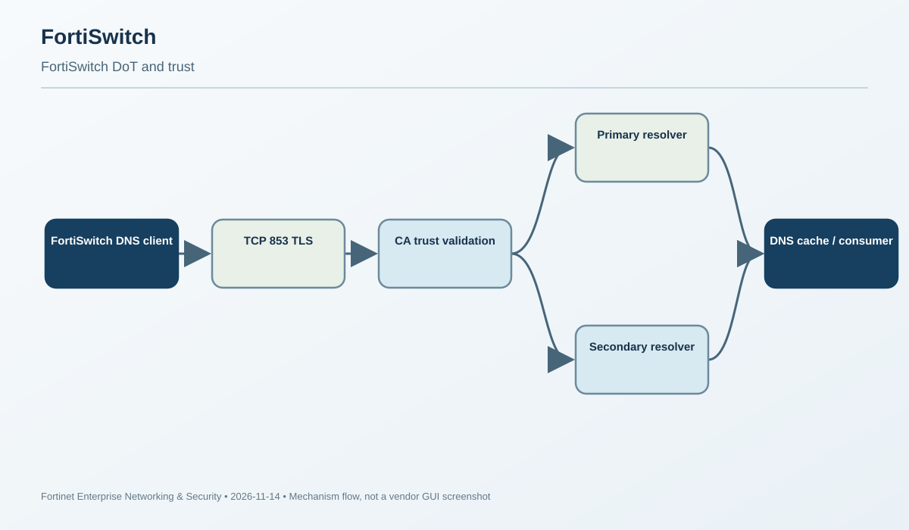
Scope: the switch's own DNS client
FortiSwitchOS 8.0 adds DNS over TLS (DoT) for DNS lookups initiated by the switch itself. This protects management/control-plane name resolution—for example, when the switch must resolve a service hostname—by encapsulating DNS queries and responses in TLS on TCP/853. It does not automatically encrypt client DNS traffic traversing the switch; that traffic is governed by the endpoint's DNS configuration and the routed/security path.
Before 8.0, FortiSwitchOS uses cleartext DNS by default over UDP/53 or TCP/53. The documented switch configuration is under config system dns. Selecting set protocol dot changes the resolver transport. All FortiSwitch models are documented as supporting DoT in 8.0.0. The configured primary and secondary resolver addresses remain the destinations; the transport is what changes.
Encryption is not the same as server authentication
The subtle but important setting is server-ca-cert. When a CA certificate is configured, FortiSwitchOS validates the DNS server's certificate before establishing the connection. If no CA certificate is specified, the connection is still made using TLS, but no CA certificate validation is performed. That means a packet capture showing encrypted TCP/853 proves use of DoT, not that the switch authenticated the intended resolver. In a private resolver deployment, import the organization's issuing CA and bind it to the DNS configuration.
Configuration example
config system dns
set primary 10.105.142.113
set secondary 10.105.142.114
set server-ca-cert "CA_Cert_1.cer"
set protocol dot
set dns-cache-limit 512
set dns-cache-ttl 1800
endThe addresses and certificate name are examples; use the actual resolver and CA. FortiSwitchOS 8.0 also changes the meaning of dns-cache-limit: it specifies cache memory in KB (range 1–1023, default 512 KB), rather than the older entry-count interpretation. An upgrade that retains a numeric value can therefore have a different practical cache capacity.
Verification
Check the effective DNS configuration with show system dns. Capture traffic from the switch management/control-plane address to the configured resolver and confirm TCP/853 plus a successful TLS handshake. If CA validation is enabled, verify the presented certificate chains to the configured trust anchor and that the resolver name/address matches the certificate identity as required by the deployment. Confirm the DNS response and the switch function that depends on the lookup. A successful TLS handshake without a configured CA does not prove trusted resolver identity; a successful DNS answer does not prove the answer came from the intended resolver if certificate verification was omitted.
Troubleshooting boundaries
If lookups stop immediately after enabling DoT, first verify the resolver supports DoT and that TCP/853 is allowed in both directions. A resolver that only listens on UDP/53 will not become DoT-capable because the switch setting changed. If the TLS session fails, inspect CA import, certificate validity and the resolver's certificate identity. If TLS succeeds but names fail, investigate DNS service response, zone/forwarder behavior and the configured domain. If the issue appears after an upgrade, review the cache-limit unit change before attributing the problem to resolver health.
Engineer takeaway: validate three independent things—transport on TCP/853, trust-anchor validation, and a correct DNS answer. They are separate checkpoints.
Primary documentation and supporting references
- DNS — FortiSwitchOS 8.0.0 Administration Guide Primary documentation
Lesson 05 · FortiAP/Wireless
Hotspot 2.0 WBA OpenRoaming ANQP advertisement and RADIUS WBA attributes
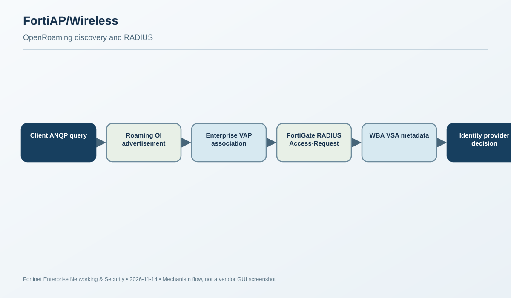
What OpenRoaming adds
OpenRoaming uses Hotspot 2.0/Passpoint discovery and Wireless Broadband Alliance federation data so a compatible client can discover a roaming network and authenticate through an identity provider without a manual captive-portal exchange at every venue. On FortiGate-managed FortiAPs, the feature is assembled from several objects: an ANQP roaming-consortium profile containing the provider Organization Identifier (OI), a Hotspot 2.0 profile carrying WBA provider/charging metadata, an enterprise Virtual AP (VAP) using RADIUS, and a WTP profile that applies the VAP to the AP radio.
Enabling wba-open-roaming alone is not the complete deployment. The OI is part of discovery: it tells a compatible client which roaming consortium is advertised. The WBA financial/data clearing-provider identifiers and charging currency/rate describe the service agreement metadata. The VAP must still use enterprise security and a RADIUS server, because the roaming identity provider performs the actual authentication/authorization exchange.
Configuration chain
config wireless-controller hotspot20 anqp-roaming-consortium
edit "openroaming"
config oi-list
edit 1
set oi "BAA2D00000"
next
end
next
end
config wireless-controller hotspot20 hs-profile
edit "openroaming"
set roaming-consortium "openroaming"
set wba-open-roaming enable
set wba-financial-clearing-provider "RBC"
set wba-data-clearing-provider "444444"
set wba-charging-currency "CAN"
set wba-charging-rate 135
next
end
config wireless-controller vap
edit "openroaming-vap"
set ssid "radius.openroaming"
set security wpa2-only-enterprise
set auth radius
set radius-server "radius-wifi"
set schedule "always"
set hotspot20-profile "openroaming"
next
endAfter the VAP is defined, attach it to the appropriate wtp-profile radio and apply that WTP profile to the physical FortiAP. A correctly created Hotspot 2.0 profile that is not attached to the VAP will not be advertised to clients. Validate the WBA OI and provider identifiers with the roaming provider; the values in the documentation are examples, not universal identifiers.
Packet-level verification
Fortinet documents using a packet capture to verify that the OpenRoaming configuration was applied. When a client connects, the FortiGate-to-RADIUS Access-Request should include WBA vendor-specific attributes (Type 26, Vendor ID 14122), including WBA-Offered-Service (subtype 12), financial clearing provider (13), data clearing provider (14), and linear-volume rate (15). Seeing these attributes is strong evidence that the Hotspot 2.0 profile was matched to the VAP and that the controller added the WBA metadata to the RADIUS request.
It does not prove that the RADIUS server accepted the user, that the identity provider has a valid federation agreement, or that a roaming session completed. Continue to inspect the RADIUS response, EAP result, accounting and client association state. If the VSA is missing, walk the object chain in reverse: physical AP/WTP profile, radio VAP list, VAP's Hotspot 2.0 profile, profile's ANQP consortium reference, and OI list.
Operational caveats
Changing an active VAP or WTP profile can trigger brief client reauthentication or disconnection. Stage the configuration and validate on a test AP before broad deployment. The service's charging metadata must match the operator agreement; it is not a substitute for billing/accounting integration. Treat ANQP discovery, 802.1X/EAP authentication, RADIUS authorization and roaming/accounting as separate phases.
Engineer takeaway: OpenRoaming is a profile-binding and federation workflow. Prove the OI is advertised, the VAP uses enterprise RADIUS, and the WBA attributes appear in Access-Request before investigating credentials.
Primary documentation and supporting references
Lesson 06 · FortiNAC
FortiNAC 9.4 REST SMS Gateway request construction, HTTPS provider integration and visibility semantics
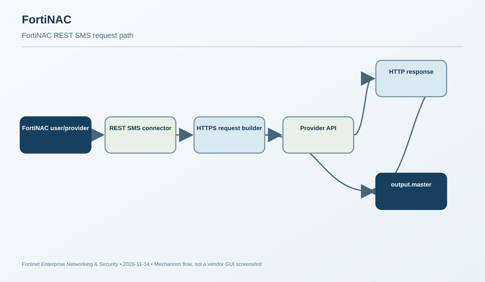
Purpose and integration boundary
FortiNAC's REST SMS Gateway is a Service Connector that lets the product send SMS through a provider's HTTP API rather than relying only on an SMTP-to-SMS gateway. It can be used wherever FortiNAC already uses an SMS gateway. This matters for guest/portal workflows and notifications where the SMS provider exposes a REST endpoint with an API URL, HTTP method, authentication and custom headers.
The connector is configured in the FortiNAC Manager interface under Network > Connectors > Create New > Email/SMS > SMTP SMS Gateway. The fields describe the outbound request: unique gateway name, API URL, HTTPS toggle, HTTP method, Basic Authentication username/password, content type, and form parameters that are sent as headers. FortiNAC includes example templates for Twilio and Vonage, but their placeholders must be replaced with the organization's account-specific endpoint and credentials.
Important semantics
If the API URL does not include a scheme, the HTTPS toggle determines whether the connection is HTTPS; the documented default is HTTP. For production, explicitly select HTTPS and verify the provider certificate rather than assuming that the connector will upgrade a bare hostname automatically. The Enabled field is easy to misread: it controls whether the gateway appears in the list of mobile providers for users in the Admin GUI and Portal. It is a visibility toggle, not a kill switch for users who already selected that gateway. If an existing user record still references the gateway, the gateway can still be used.
Form Parameters are described as headers used to contact the API URL. Therefore, the provider's API contract matters: a provider may expect a particular header name, content type, method and body format. A connector that can reach the endpoint may still fail if the provider rejects the request shape or authentication.
Test and debug
Save the configuration before testing. From the Service Connectors card, select Test Connection, choose a user, and ensure that the user has the phone number and messaging gateway configured. The phone number must include the country code. A test run with a different user, missing country code, or unsaved connector does not test the intended production path. The gateway can be set as the default from its connector card.
For debugging, enable the FortiNAC CLI debug described in the guide and inspect output.master. The request and its corresponding provider response are visible there. Use that evidence to separate DNS/TCP/TLS reachability from HTTP status, Basic Auth rejection, content-type mismatch, missing header, invalid phone number and provider-side delivery status. A successful HTTP response indicates that the provider API accepted the request; it does not prove that the handset received or displayed the message.
Operational troubleshooting
If the test fails before an HTTP response appears, verify name resolution, route, outbound firewall policy, TCP port and TLS certificate. If the provider returns 401/403, check Basic Auth and account status. A 400/415 response usually points to request fields, method, body or content type. If the test succeeds but a portal user receives nothing, confirm the user record's selected mobile provider and E.164-style country-coded phone number, then check the provider's message delivery logs. Do not toggle Enabled expecting it to stop a gateway already referenced by users; change the user's provider selection or remove the connector deliberately.
Engineer takeaway: the connector is a request builder, not a generic SMS relay. Validate the provider contract and inspect the actual request/response.
Primary documentation and supporting references
Lesson 07 · FortiNAC-F
Persistent Agent certificate check: client proof, CA trust, CRL reachability and clock tolerance
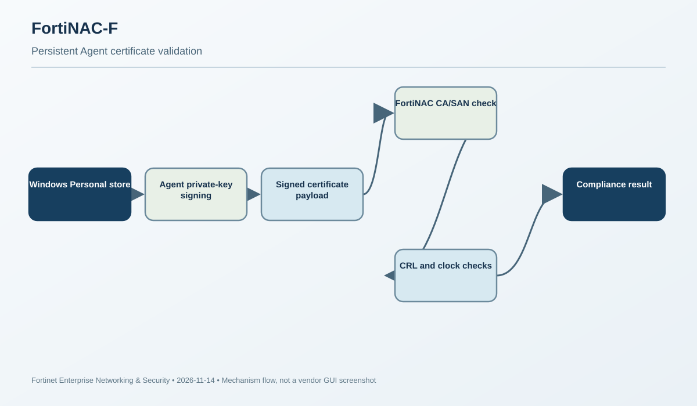
What the certificate check proves
The Persistent Agent certificate check is a Windows custom scan that tests whether a host possesses an expected client certificate and can use its private key. This is stronger than checking for a registry value or a certificate file: the scan expects a certificate in the Windows certificate store, a usable private key with Digital Signature key usage, and a signed payload that FortiNAC can validate. The certificate is associated with the endpoint identity through its subject alternative name (SAN), and the signer CA must be trusted by FortiNAC.
Object and transaction flow
First obtain the client certificate from the organization's CA and install it under Local Computer > Personal > Certificates on the endpoint. Upload the CA certificate that signed the workstation certificate to FortiNAC Certificate Management and select the Persistent Agent Cert Check target. Then create a Windows custom scan using the Certificate Check type and add that custom scan to a scan enabled by the endpoint compliance policy. When the policy runs, the agent locates the certificate, uses its private key to sign data, and reports certificate/signature/timestamp material. FortiNAC validates the chain and configured checks before assigning the scan result.
The certificate must be signed by a customer-specified CA, the host must be domain joined, the client certificate must be in the Local Computer Personal store, the hostname must appear in SAN, and the private key must support Digital Signature. The CA uploaded to the Persistent Agent Cert Check target is the signer of the workstation authentication certificate—not an arbitrary root copied from another PKI hierarchy.
Revocation and time checks
CRL Revocation Checking is optional. When enabled, FortiNAC reads CRL distribution-point URIs from the client certificate. It can retrieve a CRL directly from an HTTP URI or indirectly through configured LDAP servers for an LDAP URI. The application server must be able to reach the relevant web server or LDAP path. A correct certificate can therefore fail if revocation checking is enabled but the CRL distribution point is unreachable. The server and endpoint clocks must be within five minutes; time skew is a documented reason for a scan to fail.
Verification and failure isolation
On the endpoint, inspect the Persistent Agent log for the WinCertCheck payload containing the certificate, signature and timestamp. If that section is missing, the certificate may not be installed in the correct store or the agent cannot read its format/private key. FortiNAC's PersistentAgent debug and output.nessus can show the server-side scan processing. Validate SAN, key usage, uploaded CA, CRL URI reachability and NTP independently. The presence of a certificate in the Windows UI alone does not prove the agent can sign with its private key.
A Fortinet Community troubleshooting note from June 2026 reports that the agent did not support certificates generated/signed using the CNG framework. That article is outside the current 30-day scenario window, so it is not treated as a fresh scenario, but it remains a useful version-specific compatibility check. Confirm the deployed agent version and current release notes before replacing certificates or weakening PKI policy.
Policy and deployment boundaries
Certificate validation is one compliance signal; it does not prove that the endpoint is malware-free or that the certificate holder is currently authorized for every network segment. Tie the scan result to an endpoint compliance policy and verify the resulting host state/quarantine action separately. Roll out the scan to a pilot group first, because missing CA distribution or a clock problem can cause broad false noncompliance.
Engineer takeaway: the check is a cryptographic proof plus server-side trust/revocation/time validation. Debug the endpoint's ability to produce the signed payload before changing policy severity.
Primary documentation and supporting references
Lesson 08 · FortiAuthenticator
FSSO Mobility Agent NTLM signing compatibility and endpoint-to-FortiAuthenticator identity transaction
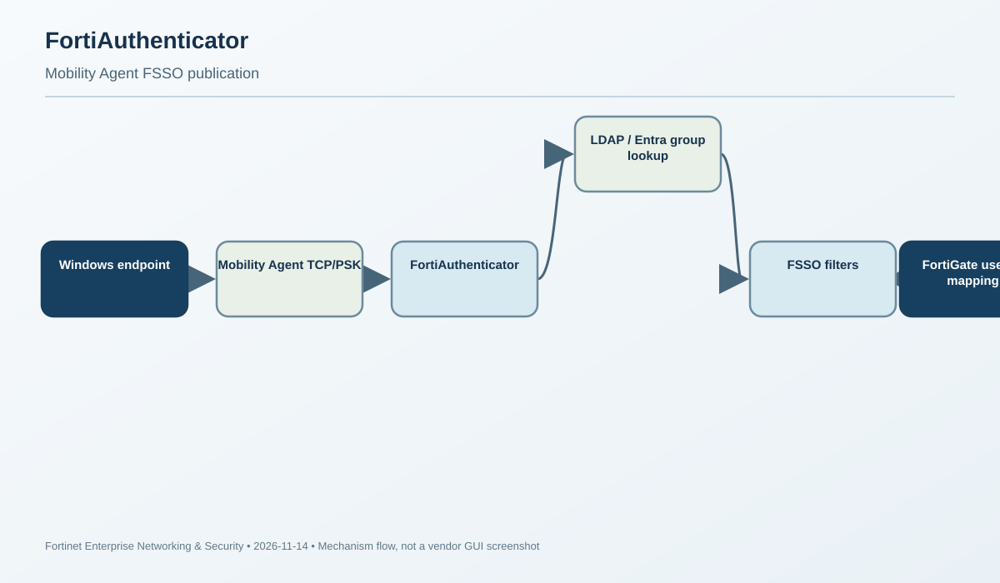
Mobility Agent architecture
The FSSO Mobility Agent runs on an endpoint and reports the logged-in username, domain and local interface/VPN IP addresses to FortiAuthenticator. It is useful when a domain-controller logon event alone is not sufficiently precise for a roaming workstation whose active address changes between LAN, Wi-Fi and VPN. The agent can be delivered through full FortiClient, VPN-only FortiClient, or the standalone Windows SSO Mobility Agent. FortiClient EMS can enable the feature and configure the FortiAuthenticator destination; EMS and FortiAuthenticator do not directly exchange the user's login event.
The agent sends identity updates over short-lived TCP sessions. It reports changes on demand and sends a keepalive at an interval controlled by FortiAuthenticator. TCP/8001 is the documented default, although the port can be changed. A pre-shared key is configured on both sides. A Mobility Agent can report several interface/VPN IPs; those can create multiple FSSO sessions while consuming one FortiClient workstation license. FortiAuthenticator's effective limit is constrained by its licensed user/session and FortiClient workstation counts, not simply by the number of endpoint installations. The Community staff guide documents up to 2,048 concurrent TCP sessions, with licensing still limiting accepted agents/sessions.
From endpoint identity to FortiGate policy
FortiAuthenticator receives the agent update, associates the username/domain/IP, and resolves group membership. In an AD environment it normally queries the LDAP server linked to the domain information. In Entra ID or hybrid environments, the prefer_azure option and an OAuth server entry can be required to obtain group membership. FortiAuthenticator then applies FSSO filters and forwards the user-IP-group mapping to connected FortiGates. Therefore, a working TCP channel does not prove the user will be published: group lookup and filter matching are separate stages.
Verification boundaries
Look under Monitor > SSO > SSO Sessions and confirm the login source is Mobility Agent. If absent, capture traffic on the configured TCP port, inspect FSSO debug under /debug/fsso-agent/, and review the endpoint agent logs. Verify the port matches on both sides, the PSK is identical, clocks are synchronized, and the license/session limit is not reached. An FSSO debug message such as expired cache item can be caused by time differences. Confirm that the endpoint is domain joined where LDAP group lookup depends on domain information, or that the Entra OAuth path is correctly configured.
Recent NTLM signing scenario
A Fortinet Community article dated November 13, 2026 reports that after Microsoft's November 10 security update KB5135557, Windows clients began offering NTLM signing by default and the FSSO Mobility Agent experienced NTLM authentication failures. The reported log includes NT_STATUS_MORE_PROCESSING_REQUIRED. The article describes an engineering investigation and a temporary workaround that permits unsigned NTLM. Treat this as a compatibility hypothesis documented by the Community—not proof that every occurrence of the error has the same cause.
Allowing unsigned NTLM reduces authentication protection. Do not deploy that workaround broadly or permanently. If an emergency exception is approved, isolate the affected clients, document the risk, scope and expiry, collect the agent/FAC traces, and restore signing as soon as a supported compatibility fix is available. Do not confuse this NTLM negotiation failure with a bad Mobility Agent PSK, blocked TCP port, LDAP group lookup failure or license exhaustion.
HA and scale considerations
Active-passive FortiAuthenticator clusters synchronize Mobility Agent configuration and current FSSO sessions, so failover can preserve mappings if the outage is short. Load-balancing clusters do not synchronize FSSO sessions by default; configuration may need manual mirroring, or agents can report to multiple FortiAuthenticators using the same PSK, or a tiered FSSO design can share sessions. Both nodes require their own relevant licenses. This is an important distinction when a single node works but sessions disappear when traffic is distributed.
Engineer takeaway: trace the complete chain—endpoint report, TCP/PSK, NTLM negotiation, group resolution, FSSO filtering, and FortiGate publication. Each stage has different evidence.
Primary documentation and supporting references
Lesson 09 · FortiPAM
Associated-secret credential indirection and Smart Association username resolution
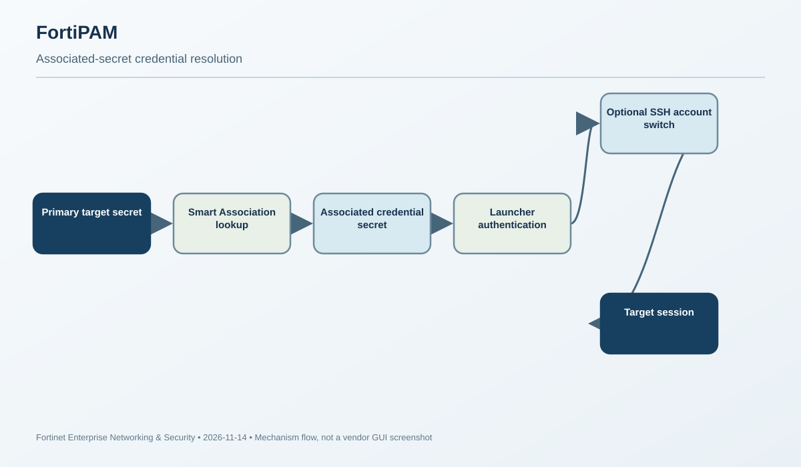
Separate target metadata from credentials
FortiPAM associated secrets let one secret describe the target while another secret supplies the credentials. A primary secret can store a target IP/hostname and launcher settings; an associated secret can hold a shared domain, username/password, SSH key or other credential fields. This avoids duplicating the same credential material across many target objects and supports a clear separation between “where to connect” and “what identity to use.”
When creating a secret, enable Associated Secret and either select a secret from the list or use Smart Association. Smart Association takes an account prefix and the currently logged-in FortiPAM username, combines them into a generated username, then searches the secret database for a secret whose username matches. If a match is found, that secret is used as the associated credential source. If no match exists—or the user cannot access the matching secret—the launch cannot resolve the intended credentials.
Launch-with semantics
The Launch with setting determines which secret's credential fields are used. Current secret's credential uses the primary secret. Associated secret's credential uses the associated secret and ignores the credential information stored in the primary secret. Fortinet explicitly requires all fields needed by the launcher to be present in the associated secret. A common error is to keep the hostname in the primary secret and assume that the primary username/password will still be merged with the associated password. The documented behavior is a credential-source selection, not an arbitrary field-by-field merge.
For SSH, Auto-Switch Account controls what happens after authentication through the associated credential. When enabled, FortiPAM logs in using the associated identity and then switches to the account stored in the primary secret. When disabled, the session remains in the associated account. The two choices are materially different for Cisco enable workflows and for shared Unix accounts.
Configuration and verification
config secret database
edit <secret-id>
set associated-secret <associated-secret-id>
set launch-with {associated-secret | itself}
set ssh-switch-account {enable | disable}
next
endUse the GUI or the supported CLI for the deployed FortiPAM version; do not paste IDs from another appliance. Test the generated Smart Association username independently, confirm the target user can access the associated secret/folder, and inspect the launch session's authenticated identity. A successful secret launch proves the chosen credential source worked; it does not necessarily prove the final session is running under the primary secret's account if SSH account switching is disabled.
Use cases and failure isolation
A Target Only secret can hold each server's address while many such secrets reference one Windows Domain secret for shared credential material. A Cisco Enable Secret can use a Cisco User secret as the associated secret; with Auto-Switch enabled, the user can authenticate and then move to enable mode. Conversely, a primary SSH secret can use an associated enable secret only as the password source when the documented launch settings are configured accordingly.
If a launch fails, do not immediately rotate the password. First determine which secret supplied the username, password, domain, key and passphrase. Then verify the generated username, association reference, folder permissions, launcher-required fields and SSH account-switch setting. This is especially important when a primary secret is copied or edited: the association can remain correct while a required field is missing from the credential object.
Engineer takeaway: associated secrets are credential indirection, not a field merge. Model the primary target object, credential object, lookup rule and final login identity separately.
Primary documentation and supporting references
- Creating a secret — FortiPAM 1.9.0 Administration Guide Primary documentation
Lesson 10 · FortiSIEM
Bipartite user-workstation login anomaly detection and dynamic peer communities
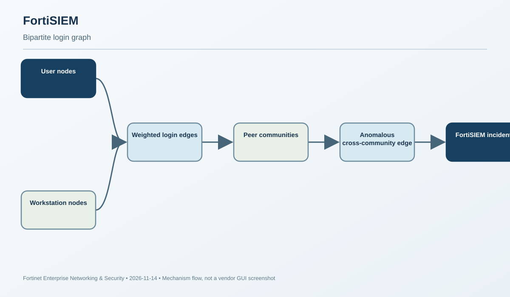
Why this model is different
FortiSIEM's login anomaly model is not a simple count threshold such as “more than 20 logins per hour.” It models which users access which workstations. The graph is bipartite: one node set contains users, the other contains workstations, and edges connect only users to workstations. An edge represents a login; its weight can represent the number of logins in a time interval. The model learns normal user-to-workstation relationships and builds dynamic peer groups from users and workstations with similar access patterns.
Scoring mechanics
During training, FortiSIEM calculates similarity relationships. A user is similar to another user when they access similar workstations; workstations are similar when they are accessed by a common set of users. During inference, a new login from user A to workstation B is anomalous when A is dissimilar to the users who typically access B. The guide defines B's user community (C), A and C's shared workstation set (E), A's exclusive workstation set (D), and C's exclusive workstation set (F). An anomaly is more likely when the shared set E is much smaller than the exclusive sets D and F. This is why a login can be suspicious even if the raw login count is low: the relationship is unusual, not necessarily the volume.
The principal tuning parameters are Threshold (scores below it are anomalous), Max node degree (high-degree users/workstations are ignored), and Convergence bound (an internal stopping criterion for the reward-matrix calculation). High-degree exclusions are intentional: domain administrators who access many workstations and shared infrastructure servers accessed by many users can distort peer relationships. Users/workstations absent from training are not in the model and may not raise incidents until retraining includes them.
Training and inference workflow
FortiSIEM provides a system-defined login report and Bipartite Graph Edge Anomaly job. Prepare the data from a report, choose the organization and time range, then train the model. The guide recommends a training factor greater than 70%, leaving the remainder for testing. Inspect Model Quality, Anomalies Found and Normal Results before scheduling. In the schedule phase, configure inference frequency and retraining frequency; the guide recommends retraining at least every seven days because new users and workstations must become part of the baseline. Inference can create a FortiSIEM incident or send email if the mail server is configured.
Verification and tuning
Review the job's input report/time window, algorithm parameters, train/test split, model quality and anomaly output. The results table marks anomalies with isAnomaly = 1; inspect the graph visualization to understand which user/workstation edge crossed the threshold. If legitimate shared-workstation logins create too many anomalies, review the peer community and max-node-degree setting before simply raising the threshold. If new endpoints/users produce no incidents, check whether they existed in the training data and whether the retraining schedule has run.
Operational cautions
The model learns from the report dataset. Missing numerical/time attributes, a narrow training window, or inconsistent login sources reduce the quality of the graph. Rows missing required fields can be ignored by the ML module. A CSV can be used to test training behavior, but the guide notes that CSV data cannot be scheduled for inference because it may not exist in FortiSIEM. Keep the training report stable and representative, and use the incident graph to validate whether a score is operationally meaningful.
Engineer takeaway: this is relationship anomaly detection. Investigate who normally accesses the workstation and how that peer community differs from the new user—not only how many logins occurred.
Primary documentation and supporting references
Lesson 11 · FortiSASE
EAP-TTLS LDAP authentication for IKEv2 IPsec agent tunnels
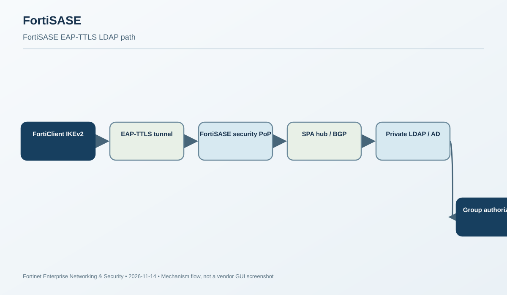
Where EAP-TTLS fits
FortiSASE can authenticate remote FortiClient users against an LDAP server, including Windows Active Directory. For IPsec agent tunnels using IKEv2, the administrator must enable EAP for LDAP authentication. Fortinet describes this toggle as enabling EAP-TTLS support for FortiSASE IPsec agent tunnels. EAP-TTLS carries the user's credentials inside a TLS tunnel so the IKEv2 agent tunnel can use LDAP authentication. This setting is only supported on instances with FortiClient 7.4 support.
The distinction between tunnel types matters. The setting is not required for LDAP authentication on SSL agent tunnels, so it is not visible on instances that support only SSL agent tunnels. In SSL-to-IPsec transition mode, the setting is supported only for an endpoint profile configured with IPsec tunnel type. Enabling it globally does not make an SSL profile use IKEv2/EAP-TTLS.
LDAP source configuration
Create an LDAP authentication source under Access & authentication > Authentication Sources > LDAP. Configure server name/address, port, common-name identifier, distinguished name/search base, secure connection, certificate and group-matching options. In AD, the user identifier may be cn, sAMAccountName, or userPrincipalName, depending on the username format. These attributes are case-sensitive where documented. Use a bind type that can search the intended DN/subtree; Fortinet recommends Regular bind for the documented example.
LDAPS is recommended. The default secure LDAP port is 636; for a custom port, enter the actual listener. Import the issuing CA when the server certificate is not signed by a CA already trusted by FortiSASE. If Server Identity Check is enabled, the certificate must contain the server IP or name configured in the LDAP source. Password renewal is available only with LDAPS. Group matching can use group objects, POSIX groups or user attributes; if user-attribute matching is selected, the filter and search base must be configured.
Private LDAP via SPA
If the directory uses a private address, set Access Type to Private so the connection uses Secure Private Access (SPA). The LDAP server must be behind the SPA hub, the BGP routing design must include the directory subnet, and policies must allow FortiSASE security PoPs to reach the hub. A successful LDAP object test from a public endpoint does not prove that a private LDAP path through the SPA hub is correct. Validate both the directory bind and the network path.
Endpoint authentication workflow
Invite or add LDAP users/groups in FortiSASE, provision a compatible FortiClient through the invitation/EMS process, and configure the endpoint profile or custom IPsec tunnel with EAP for LDAP authentication enabled. The user connects using their Windows/domain username and password. FortiSASE uses EAP-TTLS to transport the credentials securely to the LDAP authentication source, resolves user/group membership, and applies the configured access policy.
Verification and troubleshooting
Use Test connection on the LDAP source first. If that fails, inspect DNS, route, TCP/636, certificate chain, server identity, bind credentials, DN and group filters. If LDAP test succeeds but IPsec agent login fails, verify FortiClient version, IKEv2 tunnel type, EAP toggle scope and endpoint profile. If private LDAP is used, trace PoP-to-SPA-hub reachability and the BGP route/policy separately. Do not disable LDAPS or certificate identity checks to mask a routing or EAP profile problem.
Engineer takeaway: EAP-TTLS is an IPsec-agent authentication prerequisite, while LDAP bind/group matching and SPA reachability are separate dependencies. Validate them in that order.
Primary documentation and supporting references
Lesson 12 · Secure SD-WAN
FortiOS 8.0 SD-WAN ISDB destination identity matching
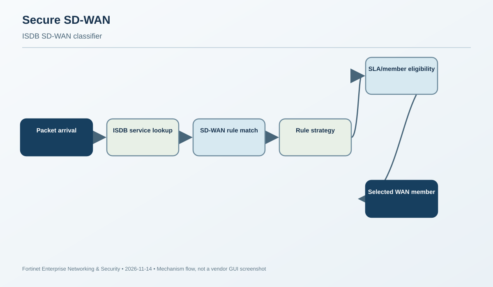
ISDB is a destination identity, not an application signature
FortiOS SD-WAN rules classify traffic before choosing an outgoing member. The destination can be identified with an address object, an Internet Service Database (ISDB) service or service group, an application-control object, a BGP route tag, or DSCP/TOS criteria. These are different classifiers. ISDB uses FortiGuard-maintained service definitions to represent destination services; application-aware routing uses application-control signatures and the IPS/application database. A rule that matches an ISDB service is not proving that the IPS engine identified the application payload.
The distinction is useful for SaaS and cloud services whose destination address ranges change. Rather than maintaining a static address group for every vendor edge, an SD-WAN rule can match an internet-service name or group. Custom Internet Services and custom groups are also available. The destination classifier is part of the service rule; the rule's strategy and SLA/member health determine which SD-WAN interface is selected after the traffic matches.
Configuration model
In the GUI, edit Network > SD-WAN > SD-WAN Rules and select one or more Internet Services or Internet Service Groups in the Destination section. In the CLI, the documented fields include:
config system sdwan
config service
edit <rule-id>
set internet-service enable
set internet-service-name <service-name>
set internet-service-group <service-group-name>
next
end
endFor custom service objects, the corresponding fields are internet-service-custom and internet-service-custom-group. The guide also lists application fields such as internet-service-app-ctrl and application groups. These are not interchangeable: ISDB uses service identity from the Internet Service Database, while application matching depends on application detection. The static dst field is a different destination match path; the documentation notes that an ISDB destination is configured instead of the destination address object.
Rule evaluation and member selection
Think of the process as two stages. First, the packet must match the rule's source and destination criteria. Second, the rule's strategy chooses an SD-WAN member based on the configured condition and performance SLA. If no explicit rule matches, the implicit rule handles the traffic. Therefore, an ISDB match does not guarantee that the preferred WAN is selected: the rule may match but its chosen member may be out of SLA, or a different earlier rule may have matched first.
Verification
Confirm that the FortiGuard ISDB database is current and that the actual destination IP/protocol/port maps to the expected service. Use the documented Internet Service lookup/diagnostic tools available in the deployed FortiOS version to validate the service identity, then inspect SD-WAN rule order, hit counters, selected member and SLA state. A rule object containing the service name proves configuration; a hit counter and session/member evidence prove the packet matched and was steered. A green SLA proves link health, not that the intended classifier matched.
Operational failure analysis
If Microsoft 365 or another SaaS workload uses an unexpected WAN, check the actual destination and ISDB identity first. A service may resolve to multiple IP ranges, and the same IP can be associated with more than one internet service. Then check whether the rule is ordered ahead of a broader rule, whether the destination field is configured as ISDB rather than a static address, and whether the member selected by the rule is eligible under the SLA. If application-control matching is enabled, verify the application-detection feature visibility and IPS/application database separately.
Engineer takeaway: ISDB classifies a destination service; the SD-WAN rule strategy and SLA select the member. Prove classifier match and member choice independently.
Primary documentation and supporting references
50-question graded examination
Questions are scenario-driven and distributed across all twelve targets. Select one answer per question, then grade the exam to reveal the correct answer and substantive feedback for all four choices.
Answer-key distribution is balanced across A, B, C and D. No answer-length hints are included.
Discovery and audit records
- 30-day machine-readable exclusion inventory — 294 records from 28 report/status artifacts, covering 2026-10-15 through 2026-11-13. Inventory was committed and read back before final topic selection.
- Selected semantic fingerprints — 12 candidates with mechanism, workflow, failure, evidence, remediation, question and diagram fingerprints; each compared with the historical inventory.
- Community sweep — all 12 required product areas searched; two fresh, directly matched scenarios verified.
- Administration-guide sweep — product-specific official documentation and version findings for all 12 targets.
- Lesson content source file · 50-question bank JSON · 24-asset diagram manifest
- Validation record · Detailed run status · Final independent verification
Community scenarios used only as scenario sources: FortiAnalyzer ClickHouse migration/reduced analytics range (November 13) and FortiAuthenticator Mobility Agent NTLM signing compatibility after KB5135557 (November 13). No Community troubleshooting article was promoted to a primary lesson source.